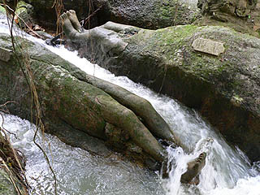
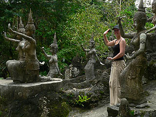
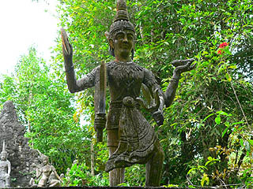
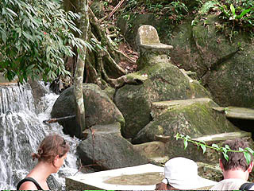

ブッダマジックガーデン/サムイ島,スラターニー県
BuddhaMagicGarden/KoSamui,SuratThani
いよいよ本日の目的地にして泰国珍寺武者修業の最終ステージ、ブッダマジックガーデンである。
このブッダマジックガーデンはシークレットブッダガーデンとも呼ばれている。ま、どっちにしてもニュアンスは伝わりますよね。
サムイ島最高峰近くにあるナゾの庭園。そこに行き着くにはかなり激しいダートをジープで登っていく。
もう、わざとこんな道にしてあるんじゃないか、と思える程の悪路。ジープの荷台で縦に横に上に下に右に左に叩き付けられた末やっと辿り着いた。
そんな秘境中の秘境、ジャングルのまっただ中にあるブッダマジックガーデンは谷底の小さな川に沿って展開されていた。
川の両サイドには幾つかの建物と多くのコンクリ彫塑物があり、見る者を「何でこんな山の中で・・・」と、呆れさせている。
このナゾのガーデン、実はある人物が独りでつくったという。
どこの国にも独りでつくっちゃった系のオヤジっているんですねえ。
庭園自体はさして広くないものの、あちこちにコンクリ像がいて独自の世界観を構築している。
草むらに隠れていたりするので要注意だ。
川の中の足だけ彫刻された岩。
行く行くは全身を彫刻しようとしたのかこれで完成なのかは作った本人にしか分からないが、かなりインパクトがあった。

このパラダイスの作者とその奥さん（たぶん）。
ガイドによるとニムさんという人物だそうだ。
今から60年程前に創られたこの脳内麻薬垂れ流しガーデン、ニムさんが77才から91才の間に作ったという。
ガーデンの一番奥には三段飾りの立派な雛人形、じゃなくてタイの神様がいた。
考えてみたらこココってブッダガーデンと銘打っている割にはあまり仏像が多くない。
どちらかというとバラモン系の神様がメインだ。ま、ブッダ？誰？という人達相手のネーミングなのでどっちでもいいんでしょうけど。
タイの神様についてはお寺などで良く見るのでああ、あの人ね、というのは分かるのだが、ほとんど知識がないので名前とか特徴とか生い立ちとか御利益とか得意技とか好きな食べ物とか血液型とか好みのタイプとかは知りません。機会があったらそのうち勉強してみます。
踊っているんだか変なポーズを決めているのかよくわからない女性の人達の群れ。
他のツアーの客はてっぺんにいる神様に向かってよじ登って記念写真をパチリ。ま、気持ちはわかります。
こんなポーズを真似たくなるのも分かります。

雛飾りの隣には岩の上に立つ神様の図。
足元には楽団を従えて御満悦気味である。
タイのトラディショナル楽器を携えた楽団の彫像からは何だかムエタイの音楽でも聞こえてきそうだ。
もしかしたら楽団と女性のダンスが一組になっていて、神話のシーンでも表現していたのかも知れないが、そこは無知なもので全然わっかりませ〜ん。
高温多湿な山の中ゆえ無彩色のコンクリ像は苔が付着し、黒ずんでいる。

しかし良く見ると衣服やアクセサリーには細かい装飾が施されており、仕事の細かさを誇っている。
この鳥なども羽の一枚一枚に模様が刻み込まれている。
でも正面に回れば蛇食べてるし。豪華な装飾でポンチなシーン、がここの売りと見た。
川を渡ってみると対岸にもコンクリ像がある。
川べりで瞑想する僧侶。
後ろには虎と犬、目の前には若いお嬢さん、しかしお坊さんは動ずる事なく瞑想中。
偉い！煩悩を消して修業！修業！私の腑抜けた修業とは大違いですね。
私だったら絶対この生き物に目が釘付けになってしまい、瞑想なんか出来ませんもん。↑
このニムさん熱心な仏教徒だったらしいが、77才にして一体何があったのだろう。何が彼をつき動かしたのだろう。
それは恐らく自分の世界観を丸出しにした新しい世界の創造を希求したのだと思う。
古今東西の妄想全開パラダイスはみな、他人には理解不能だが本人だけにはわかる俺世界の構築という究極の目的によって作り上げられている。
従ってそこには一見雑多にみえるが俺ルールによる世界観が徹底されているのだ。
オヤジ独りでつくっちゃった系の庭園には規模の違いこそあれ、俺ルールの徹底という点では見事に共通しているのだ。
ここのマジックガーデンも例外なく徹底したオレ主義オレ流が貫かれていた。
園内の隅の岩の上にぽつんと椅子がつくられていた。
オレ世界の創造主はこの椅子に座って園内を眺めていたのだろうか。

これにて泰国珍寺武者修業はお終い。珍寺魂のステージをワンランクアップした気がするぞ。
大変有意義な修業であった。
帰りはまたまた激しいダート。揺れまくるジープの荷台に乗っていると意識が遠くなっていく。ああ雨が降って来た〜、腹減った〜。
薄れゆく意識の中で、一つだけ気になったのは、ガーデンの売店のおばちゃんがスクーターで来てた事。何でだろう・・・
最後におまけ
泰国珍寺武者修行
珍寺大道場 HOME